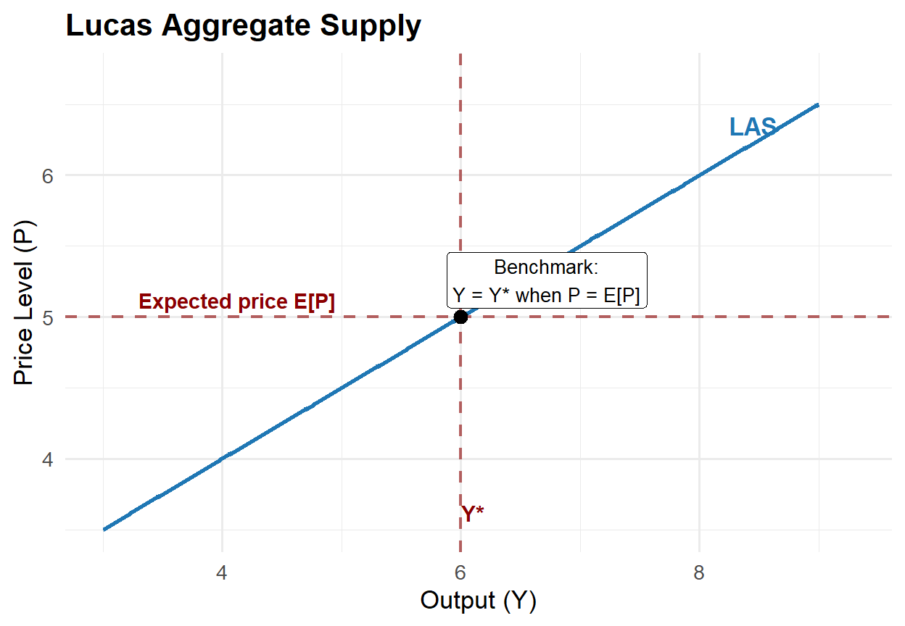
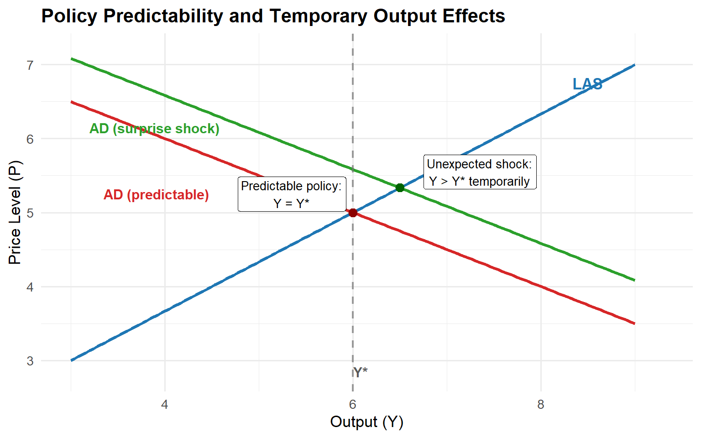
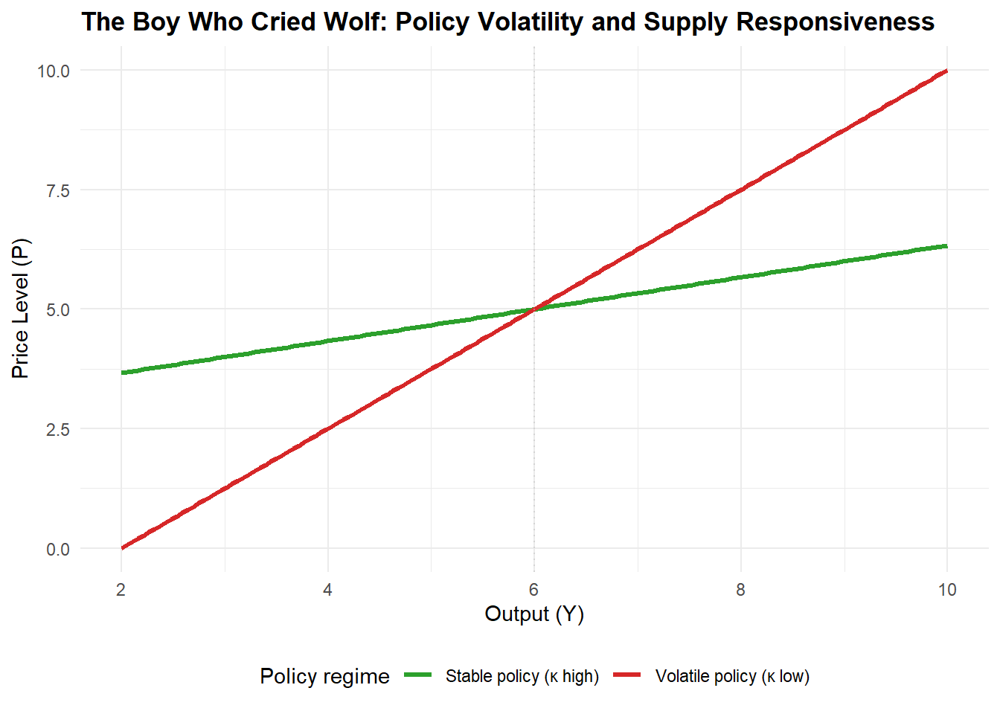

The New Classical Approach
1 Introduction
The New Classical approach extends monetarist skepticism about policy fine-tuning by sharpening the mechanism through which policy affects real outcomes. The key shift is from short-run money illusion under adaptive expectations (Friedman’s framework) to model-consistent forecasting under rational expectations, which removes systematic policy surprises and eliminates systematic real effects of monetary policy.
1.1 Expectations and the rational expectations revolution
1.1.1 Adaptive expectations
Adaptive expectations operate as a trial-and-error forecasting rule where agents update forecasts using past observed outcomes:
Price expectations: \(E_{t-1}P_t = f(P_{t-1}, P_{t-2}, ...)\)
A common error-correction form is: \[\pi_t^e = \pi_{t-1}^e + \lambda(\pi_{t-1} - \pi_{t-1}^e), \quad 0 < \lambda \le 1.\]
Adaptive expectations permit systematic forecast errors during regime changes, creating temporary money illusion and thus temporary real effects.
1.1.2 Rational expectations
Rational expectations are defined by three criteria: (i) forecasts use the true economic model (agents know the economy’s structure), (ii) forecasts condition on all available information, and (iii) forecast errors are purely random—systematic errors are eliminated.
In classical formulation: expectations are “the same as the predictions of the relevant economic theory,” and the economy does not waste information.
Model-consistent forecasting: \[E_{t-1}P_t = E(P_t \mid I_{t-1}),\] where \(I_{t-1}\) is the information set at time \(t-1\).
If workers have access to unbiased forecasts, predictable policy loses its ability to manipulate perceived real wages and thus loses its ability to shift real output, even in the short run.
2 The New Classical model of output and prices
2.1 Lucas aggregate supply and aggregate demand
The New Classical model consists of two equations: Lucas supply (LAS) and aggregate demand (AD). In the figure, the black point marks the benchmark equilibrium where expectations are fulfilled: \(P_t = E_{t-1}P_t\) and therefore \(Y_t = Y^*\).
Lucas aggregate supply (LAS): Output deviates from potential only when the actual price level differs from the price level that firms and workers expected one period earlier: \[Y_t^s - Y^* = \kappa(P_t - E_{t-1}P_t).\]
Lucas (1972) derives this in a market-clearing framework with optimizing agents.
Interpretation in the diagram: - If \(P_t > E_{t-1}P_t\): the economy moves up along the LAS curve and output rises above potential (\(Y_t^s > Y^*\)) - If \(P_t = E_{t-1}P_t\): the economy stays at the benchmark point, so output remains at potential (\(Y_t^s = Y^*\)) - If \(P_t < E_{t-1}P_t\): the economy moves down along the LAS curve and output falls below potential (\(Y_t^s < Y^*\))
The parameter \(\kappa\) measures supply responsiveness: \(\partial Y_t / \partial(P_t - E_{t-1}P_t) = \kappa\).
Aggregate demand (AD): In log form: \[Y_t^d = \gamma + M_t - P_t,\] where \(M_t\) is nominal money and \(\gamma\) captures exogenous demand shifts.
Agents know structural parameters \(\gamma\), \(\kappa\), and natural output \(Y^*\).
2.2 Solving the model: the role of \(\kappa\)
Equilibrium: \(Y_t^s = Y_t^d = Y_t\). Combining LAS and AD:
Under rational expectations: \[E_{t-1}Y_t = Y^*.\]
Output deviations depend only on monetary surprises: \[Y_t - Y^* = \frac{\kappa}{1+\kappa}(M_t - E_{t-1}M_t).\]
Price surprises scale with monetary surprises: \[P_t - E_{t-1}P_t = \frac{1}{1+\kappa}(M_t - E_{t-1}M_t).\]
Interpretation: larger \(\kappa\) means output responds more, prices respond less; smaller \(\kappa\) reverses this. The Lucas supply slope (P on vertical axis, Y horizontal) is proportional to \(1/\kappa\).
When policy is volatile, agents discount price movements as noise (“boy who cried wolf”), lowering effective \(\kappa\) and steepening LAS.
3 Monetary policy implications
3.1 The monetary policy ineffectiveness proposition
With rational expectations and market clearing, systematic and predictable monetary policy has no real effect, even short-run. Predictable policy is incorporated into expectations, shifting prices, not real outcomes.
Formally, if \(M_t = E_{t-1}M_t\) (policy is forecastable): \[Y_t - Y^* = 0.\]
3.2 Systematic rules versus random disturbances

Y* (surprise)." width="768">Sharp distinction: (i) predictable rule-like policy vs. (ii) random disturbances.
Money supply process: \[M_t = (1 + g_M)M_{t-1} + u_t,\] where \(u_t\) is white noise (\(E_{t-1}u_t = 0\)).
Then: \(E_{t-1}M_t = (1 + g_M)M_{t-1}\), so \(M_t - E_{t-1}M_t = u_t\).
Output deviations: \[Y_t - Y^* = \frac{\kappa}{1+\kappa}u_t.\]
Only randomness affects output. Predictable money growth affects the price level, not real activity.
3.3 Why deliberate unpredictability is not recommended

The model should not justify randomness. Two reasons:
- Random policies produce recessions and booms equally (negative \(u_t\) as likely as positive).
- High volatility changes behaviour: agents discount price signals, steepening LAS (lower effective \(\kappa\), higher price response).
This logic explains modern central-bank transparency: policy is more effective when expectations are anchored and communication reduces unnecessary uncertainty.
4 Exceptions and policy extensions
Two important exceptions: monetary policy can stabilise real activity under rational expectations if key assumptions are relaxed.
4.1 Asymmetric information and real shocks
If productivity shocks drive cycles and the central bank forecasts a negative shock before the private sector, it can expand policy in advance to stabilise output (at higher prices).
This fits the New Classical framework because the CB has an informational advantage, creating a price surprise from the public’s perspective.
Compatible with real-business-cycle reasoning: technology/productivity shocks drive cycles.
4.2 Long-term nominal wage contracts and stabilisation
In many economies, nominal wages are fixed by multi-year contracts. Even if demand shocks are anticipated, monetary policy can offset them because some nominal wages cannot adjust immediately—rigidity creates stabilisation scope.
This aligns with Fischer (1977): under wage rigidity, monetary rules interact with shock propagation even under rational expectations.
Under symmetric information (no CB informational advantage), stabilisation works best for demand shocks; supply-side stabilisation requires informational asymmetry.
4.3 Lucas critique and credibility
The Lucas critique: policy-effect estimates from historical relationships are unreliable if decision rules shift with the regime. This motivates structural, microfounded models.
If agents form expectations rationally, commitment and credibility shape outcomes through expectations. Rules, strategy statements, and transparent communication are policy tools.
Time-inconsistency literature: policy is strategic interaction with rational agents. Discretionary optimisation can backfire because promises today are not optimal tomorrow (after expectations set). Central to rules-versus-discretion analysis.
5 Modern evidence and applications
5.1 Measuring policy surprises
New Classical model disturbance: \(M_t - E_{t-1}M_t\). Modern empirical work isolates surprise components using high-frequency financial data.
Recent IMF working paper: dataset of monetary policy shocks for 21 advanced and 8 emerging economies (2000–2022), using daily changes in interest rate swap rates around central bank announcements to identify unexpected policy shocks to the rate path. Maps directly to model: unexpected shocks are the empirical analogue of \(u_t\).
5.2 Credibility and anchored expectations in practice
New Classical analysis makes credibility central. Modern CBs frame policy as expectations management.
Federal Reserve: publishing its “Statement on Longer-Run Goals and Monetary Policy Strategy” helps the public understand the framework—matters for transparency, accountability, and effectiveness.
ECB (2021 strategy): symmetric 2% medium-term inflation aim; notes that effective lower bound can require “especially forceful or persistent” measures, including transitory inflation above target.
IMF research: better-anchored expectations → less persistent inflation responses to shocks, reinforcing New Classical emphasis on credibility and expectations formation.
5.3 Policy regime episodes
Bank of Japan: reference timeline documents unconventional regimes from late 1990s onward (ZIRP 1999, QE from 2001). Explicitly lists “policy duration effect (forward guidance)” as part of ZIRP—an expectations-management concept compatible with New Classical theory.
Japan’s 2024 framework change: QQE with yield curve control and negative rates judged to have “fulfilled their roles,” shifting back to short-rate guidance—regime transition where expectations and credibility matter.
ECB (June 2014): introducing negative deposit facility rate (–0.10% effective June 11, 2014) illustrates how rules change when constraints bind and why expectation formation is central to transmission.
COVID-19 emergency actions: central banks reacted with large-scale measures for market functioning and macro stabilisation, showing regime and expectations logic when short rates are constrained.
5.4 Comparative framework: mechanisms and applications
| Mechanism | Prediction | Modern illustration |
|---|---|---|
| Systematic, predictable policy | If anticipated, shifts \(E_{t-1}P_t\) one-for-one; \(Y_t \approx Y^*\) | Fed and ECB strategy statements anchor expectations through transparency. |
| Unanticipated shocks | Only surprise component drives \(P_t - E_{t-1}P_t\), hence \(Y_t - Y^*\) | IMF high-frequency dataset (2000–2022) identifies unexpected policy shocks at announcements. |
| Policy volatility | Agents discount price signals; LAS steepens (lower effective \(\kappa\)) | CBs prefer predictable reaction functions over crisis-era surprise moves. |
| Wage contracts | Nominal rigidity reopens stabilisation, even under rational expectations | BoE COVID interventions supported market functioning and prevented tightening. |
| Informational advantage | CB with better real-shock information can offset systematically | BoJ forward guidance and regime design link to RBC-style productivity shocks. |
6 Problem questions
In the LAS equation \(Y_t - Y^* = \kappa(P_t - E_{t-1}P_t)\), interpret every term economically. Why does the model predict \(E_{t-1}Y_t = Y^*\) under rational expectations?
Show that equilibrium output deviations are \(Y_t - Y^* = (\kappa/(1+\kappa))(M_t - E_{t-1}M_t)\). What happens as \(\kappa \to 0\)? What happens as \(\kappa \to \infty\)?
Explain why “random policy can move output” is not an argument for deliberate policy randomness. Explain using both (i) the sign symmetry of shocks and (ii) the “boy who cried wolf” mechanism.
Describe the asymmetric-information exception: what must be true about the central bank’s information set relative to the private sector’s for systematic stabilisation to operate under rational expectations?
Explain the wage-contract critique: why can anticipated monetary policy offset demand shocks when only part of the economy’s wages are flexible?
Using high-frequency monetary policy shock data from modern empirical work, explain how researchers operationalise “policy surprises.” Why is this relevant to the New Classical policy-ineffectiveness result?
6.1 References
Key theoretical and policy sources cited in this reading include (Muth, 1961; Lucas, 1972; Sargent and Wallace, 1976; Fischer, 1977; Prescott, 1986; Bank, 2014, 2021; England, 2020; Fund, 2024; Japan, 2024, 2026).
Bank, E.C. (2014) “ECB introduces a negative deposit facility interest rate.” Press release. Available at: https://www.ecb.europa.eu/press/pr/date/2014/html/pr140605_2.en.html.
Bank, E.C. (2021) “The ECB’s monetary policy strategy statement.” Strategy statement. Available at: https://www.ecb.europa.eu/home/search/review/html/ecb.strategyreview_monpol_strategy_statement.en.html.
England, B. of (2020) “Monetary policy committee announces additional measures to support the economy.” Press release. Available at: https://www.bankofengland.co.uk/monetary-policy-summary-and-minutes/2020/monetary-policy-summary-for-the-special-monetary-policy-committee-meeting-on-19-march-2020.
Fischer, S. (1977) “Long-term contracts, rational expectations, and the optimal money supply rule,” Journal of Political Economy, 85(1), pp. 191–205.
Fund, I.M. (2024) A new dataset of high-frequency monetary policy shocks. Working Paper 2024/224. International Monetary Fund.
Japan, B. of (2024) “Changes in the monetary policy framework.” Statement. Available at: https://www.boj.or.jp/en/announcements/release_2024/k240319a.pdf.
Japan, B. of (2026) “Past monetary policy meetings.” Chronology / archive page. Available at: https://www.boj.or.jp/en/mopo/mpmsche_minu/past.htm.
Lucas, Jr., Robert E. (1972) “Expectations and the neutrality of money,” Journal of Economic Theory, 4(2), pp. 103–124.
Muth, J.F. (1961) “Rational expectations and the theory of price movements,” Econometrica, 29(3), pp. 315–335.
Prescott, E.C. (1986) Theory ahead of business cycle measurement. Staff Report 102. Federal Reserve Bank of Minneapolis.
Sargent, T.J. and Wallace, N. (1976) “Rational expectations and the theory of economic policy,” Journal of Monetary Economics, 2(2), pp. 169–183.